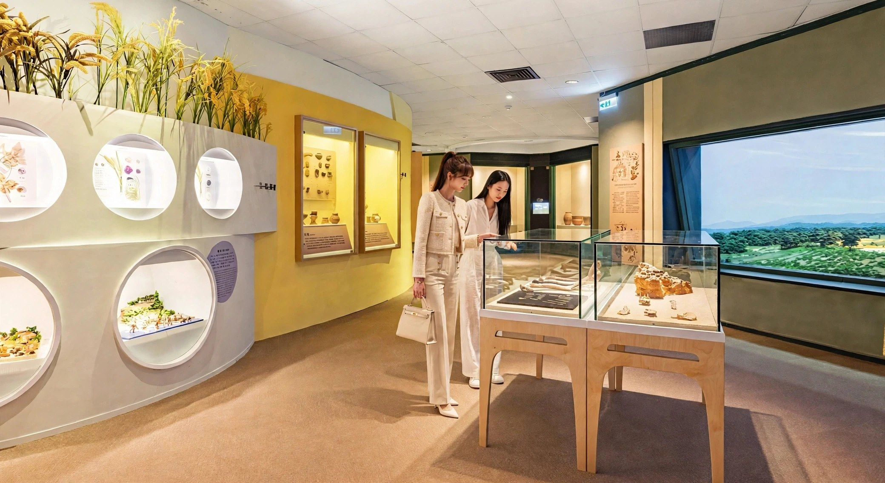

五千年的沉默 古代人說故事
保留下來的展項，禁不起隔壁的震動
五千年的沉默：古代人說故事
國立自然科學博物館人類文化廳常設展區更新案，以《古代人說故事》為題，呈現東海岸舊石器時代八仙洞、新石器時代卑南與麒麟文化，以及中部大坌坑、牛罵頭、大馬璘、營埔與番仔園等考古文化的最新研究成果。展覽核心展品是臺灣境內的重大考古發現–安和母子。安和遺址大坌坑文化層中密集排列著48具骨骸，是目前臺灣中部發現最早的墓葬區，其中含大量陪葬品的M13、M15標本，配戴鯊齒形玉飾的男性標本M46，以及母親與嬰孩的合葬，都是這批墓葬中的代表性案例。
這是同一個常設展區內的局部更新，部分展項保留、部分展項拆除重做–保留下來的既有設施與展櫃，就近鄰接著正在施工的拆除工程，震動與粉塵是最直接的威脅。施工過程必須把這些風險控制在最小範圍，確保拆除跟新作工程不會傷到留下來的展項與典藏文物。更麻煩的是，舊展場結構裡有大量FRP、石膏與鐵網混合材料，這類複合材料拆除後，必須交給具合法清運執照的廠商處理–而具備這項資質的廠商數量有限，拆除清運作業因此得花上相當多時間協調排程，不是「找人來清一清」這麼簡單。
入口展台採用特殊古銅漆處理，讓觀眾一踏進展區，就先透過材質的色澤與質感，感受到與青銅器、玉器等考古文物相呼應的時間氛圍。展場依考古文化年代劃分數個主題分區，以牆面色彩區隔卑南文化、大坌坑文化等不同展區，搭配弧形動線串接各文化單元，引導觀眾依時間軸依序參觀。展櫃形式依展品性質分成多種型式–木框玻璃層架櫃陳列陶瓷、玉飾等小型文物，圓形玻璃罩展示座留給單件重點文物，嵌入牆面的多層次凹槽展櫃則用來分層陳列不同尺寸的文物。展場內還設置了「考古文物修復室」，用玻璃帷幕區隔出一個觀眾也能參觀的文物修復工作空間，讓民眾親眼看見文物保存修復實際運作的樣子；地面投影互動裝置與大型動畫影像牆，則搭配化石骨骼標本的實體展示，把考古發掘現場的情境跟史前生態場景，帶到觀眾眼前。
有專案想討論？
聯絡我們

